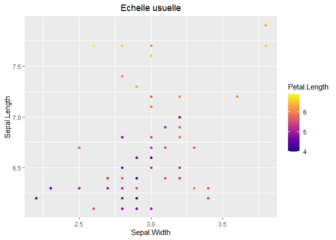
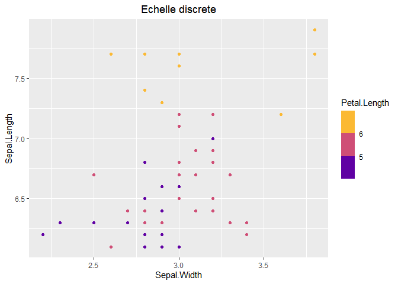
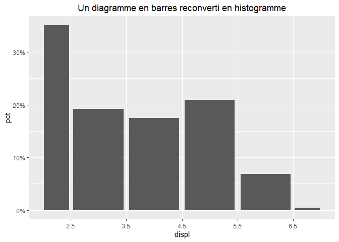
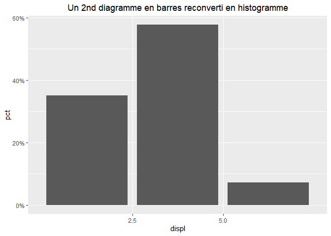
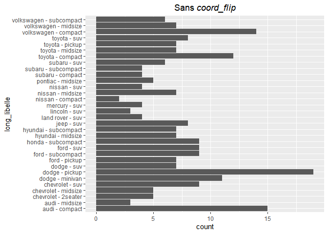

Introduction
La nouvelle version de ggplot2 apporte des nouveautes et des changements dont les details sont presentes ici https://www.tidyverse.org/blog/2020/03/ggplot2-3-3-0/.
Vous trouverez ci-dessous quelques exemples de ces evolutions.
library("ggplot2")
# pour centrer les titres des graphiques ggplot2
theme_update(plot.title = element_text(hjust = 0.5))
library("ggtext")
# pour mettre du markdown dans le titre avec le package ggtext
theme_update(plot.title = element_markdown())
library("dplyr")
donnees = ggplot2::mpg
tab = donnees %>% count(displ = round(displ)) %>% mutate(pct = n/sum(n),
pct_char = scales::percent(pct))Echelle discretisee avec scale_colour_binned
gg = ggplot(iris %>% filter(Sepal.Length > 6), aes(Sepal.Width, Sepal.Length, col = Petal.Length)) +
geom_point()
gg + scale_color_viridis_c(option = "plasma") + ggtitle("Echelle usuelle")
gg + scale_colour_binned(type = "viridis", option = "plasma")+ ggtitle("Echelle discrete")
Axe discretise avec scale_x_binned
Cette methode permet en particulier de voir nettement les valeurs qui separent les barres, contrairement a l’histogramme classique a la fin de ce document.
gg1 = ggplot(tab, aes(displ, pct)) + scale_x_binned(breaks = 0.5 + 1:7) + geom_col() +
scale_y_continuous(labels = scales::percent) +
ggtitle("Un diagramme en barres reconverti en histogramme")
gg2 = ggplot(tab, aes(displ, pct)) + scale_x_binned(n.breaks = 3) + geom_col() +
scale_y_continuous(labels = scales::percent) +
ggtitle("Un 2nd diagramme en barres reconverti en histogramme")
gg1
gg2
Plus besoin de coord_flip pour permuter les axes x et y
donnees$long_libelle = paste(donnees$manufacturer, "-", donnees$class)
ggplot(donnees) + geom_bar(aes(x = long_libelle)) + coord_flip() + ggtitle("Avec *coord_flip*")
ggplot(donnees) + geom_bar(aes(y = long_libelle)) + ggtitle("Sans *coord_flip*")
Changement de syntaxe pour les calculs de densite et autres
On va produire cette fois un veritable histogramme plutot que la combinaison equivalente de scale_x_binned et geom_col vue plus haut. Les chiffres qu’on veut retrouver dans l’histogramme sont les suivants (pas tout a fait a cause du traitement des valeurs “limites” entre 2 barres, 3.5 par exemple)
knitr::kable(tab %>% select(-pct))| displ | n | pct_char |
|---|---|---|
| 2 | 82 | 35.0% |
| 3 | 45 | 19.2% |
| 4 | 41 | 17.5% |
| 5 | 49 | 20.9% |
| 6 | 16 | 6.8% |
| 7 | 1 | 0.4% |
ggplot(mpg, aes(displ)) +
geom_histogram(aes(y = stat(density*width)), binwidth = 1) + xlim(1.5,7.5) +
scale_y_continuous(labels = scales::percent) +
ggtitle("Répartition de la cylindree en % avec l'ancien *stats*")
ggplot(mpg, aes(displ)) +
geom_histogram(aes(y = after_stat(density*width)), binwidth = 1) + xlim(1.5,7.5) +
scale_y_continuous(labels = scales::percent) +
ggtitle("Repartition de la cylindree en % avec le nouveau *after_stats*")